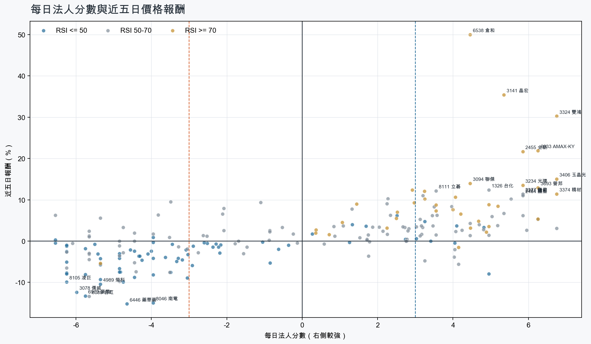
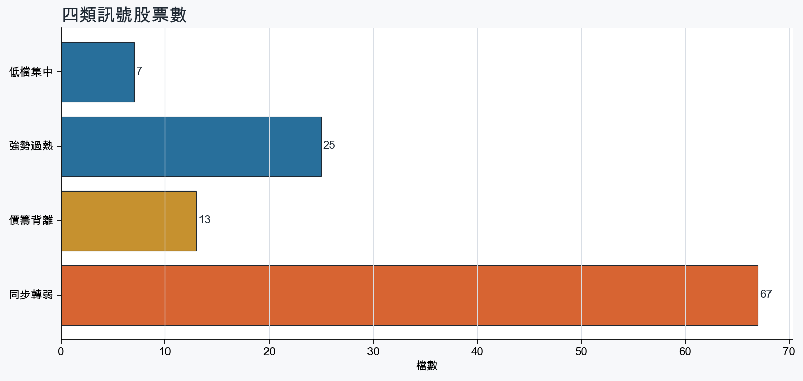
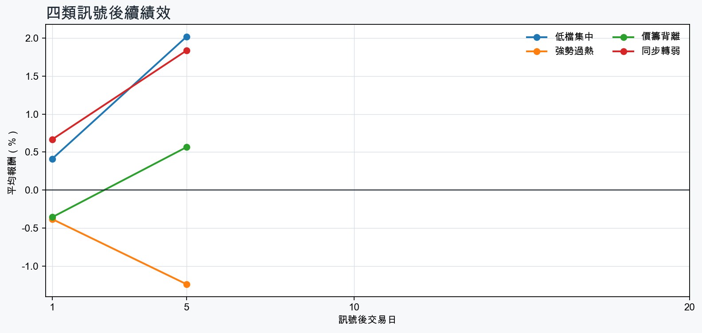

市場情緒中性分歧
近5日法人合計+33,540 張
篩選池上漲比例54.5%
籌碼好 / RSI低7 檔
籌碼差 / 價跌15 檔



MOOD × MONEY
情緒與籌碼雷達
熱度代表被討論程度；情緒分與法人方向分開計算。熱門不等於適合追價，樣本不足也不硬判多空。
| 股票 | 情緒 | 討論熱度 | 情緒 × 籌碼 | 情緒 × 基本面 |
|---|---|---|---|---|
| 8046 南電同步轉弱 | 情緒低迷 -62.9信心 100 | 1004 篇 / 330 留言 / 3 則新聞 | 情籌雙弱法人分 -4.0 | 基本面佳、情緒悲觀基本面分 +3.6 |
| 2409 友達低檔集中 | 情緒高漲 +49.9信心 100 | 871 篇 / 157 留言 / 3 則新聞 | 情籌共振法人分 +4.1 | 基本面與情緒分歧基本面分 -0.8 |
| 6446 藥華藥同步轉弱 | 偏多 +16.7信心 95 | 772 篇 / 77 留言 / 2 則新聞 | 情籌混合法人分 -4.7 | 基本面與情緒分歧基本面分 +3.6 |
| 3324 雙鴻強勢過熱 | 中性分歧 +0.0信心 87 | 771 篇 / 76 留言 / 3 則新聞 | 高熱分歧法人分 +6.8 | 基本面與情緒分歧基本面分 +3.6 |
| 3006 晶豪科價籌背離 | 中性分歧 -11.5信心 82 | 741 篇 / 62 留言 / 3 則新聞 | 高熱分歧法人分 -4.8 | 基本面與情緒分歧基本面分 +3.6 |
| 2455 全新強勢過熱 | 情緒高漲 +72.6信心 100 | 732 篇 / 53 留言 / 3 則新聞 | 情籌共振法人分 +5.8 | 基本面與情緒共振基本面分 +3.6 |
| 3645 達邁同步轉弱 | 偏多 +20.7信心 84 | 701 篇 / 45 留言 / 3 則新聞 | 熱門但法人撤退法人分 -6.2 | 基本面與情緒分歧基本面分 +0.5 |
| 6669 緯穎價籌背離 | 偏多 +26.3信心 75 | 691 篇 / 44 留言 / 3 則新聞 | 熱門但法人撤退法人分 -6.5 | 基本面與情緒共振基本面分 +3.0 |
| 2426 鼎元強勢過熱 | 情緒高漲 +40.1信心 81 | 672 篇 / 33 留言 / 2 則新聞 | 情籌共振法人分 +3.5 | 基本面與情緒共振基本面分 +2.4 |
| 3406 玉晶光強勢過熱 | 偏多 +32.3信心 67 | 631 篇 / 24 留言 / 3 則新聞 | 情籌共振法人分 +6.8 | 基本面與情緒共振基本面分 +3.0 |
| 6919 康霈*同步轉弱 | 偏多 +19.1信心 38 | 611 篇 / 29 留言 / 0 則新聞 | 情籌混合法人分 -5.8 | 基本面與情緒分歧基本面分 -3.8 |
| 3141 晶宏強勢過熱 | 情緒高漲 +58.4信心 58 | 561 篇 / 12 留言 / 3 則新聞 | 情籌共振法人分 +5.3 | 基本面與情緒共振基本面分 +3.6 |
01
籌碼好 / RSI低
優先研究基本面；法人續買且價格止穩時，才適合分批觀察。
| 股票 / 確認狀態 | 每日法人分 | 浦男式近似 | 法人加速度 | RSI / 相對強弱 | 量價確認 | 融資融券 | 每週集保確認 | 基本面 | 情緒 / 情籌 | 近期消息 | 論壇討論 |
|---|---|---|---|---|---|---|---|---|---|---|---|
| 2324 仁寶可研究 · 100 分籌碼與價格確認，可列研究清單 | +3.2法人 +45,627 張 / 2 天 | 命中 · 95站上月線；中期均線偏多；法人籌碼偏多；留意買超延續不足 | +48,249 張近3日 +46,166 / 連續 +1 日 | 49.8相對大盤 +8.6% | 量比 1.27確認分 +6.5價格、量能與籌碼未見明顯弱項 | -%融資 - 張 / 融券 - 張 | +2.57 pp1000張 +2.11 pp | 單月營收年增 +38.3%；累計營收年增 +18.8%；上半年 EPS 1.18上半年營益率 1.3%來源：公開資訊觀測站 | 偏多 +29.7熱度 39 / 信心 30情籌共振 | 【Follow法人】外資回頭狂買仁寶近7萬張！二哥聯電、鴻海也獲加碼逾2.6萬張Yahoo股市 · 09/04外資買超562億！進出前10個股一文看 加碼仁寶、砍台企銀ETtoday財經雲 · 09/04 | 近期沒有明確提及本股的論壇樣本 |
| 2312 金寶等待確認 · 69 分籌碼有訊號，但價格尚未確認 | +4.8法人 +11,184 張 / 4 天 | 接近 · 67站上月線；法人籌碼偏多；買超具延續性；留意中期均線未翻多、法人買盤未加速 | -4,605 張近3日 +3,652 / 連續 +1 日 | 48.8相對大盤 -0.3% | 量比 0.88確認分 -1.820日線低於60日線；法人買盤減速 | -%融資 - 張 / 融券 - 張 | +1.35 pp1000張 +1.35 pp | 單月營收年增 +49.2%；累計營收年增 +1.2%；上半年 EPS 0.70上半年營益率 2.8%來源：公開資訊觀測站 | 樣本不足 +0.0熱度 0 / 信心 0情緒樣本不足 | 近期沒有通過股票語境篩選的新聞 | 近期沒有明確提及本股的論壇樣本 |
| 1319 東陽等待確認 · 68 分籌碼有訊號，但價格尚未確認 | +3.0法人 +1,747 張 / 4 天 | 接近 · 70站上月線；中期均線偏多；法人籌碼偏多；留意法人買盤未加速、量能異常 | -1,613 張近3日 +447 / 連續 +1 日 | 44.4相對大盤 +2.4% | 量比 0.64確認分 -0.2成交量不足；法人買盤減速 | -%融資 - 張 / 融券 - 張 | +1.17 pp1000張 +0.77 pp | 單月營收年增 +22.7%；上半年 EPS 2.98；上半年營益率 15.8%累計營收年增 -10.2%來源：公開資訊觀測站 | 樣本不足 +0.0熱度 0 / 信心 0情緒樣本不足 | 近期沒有通過股票語境篩選的新聞 | 近期沒有明確提及本股的論壇樣本 |
| 3042 晶技等待確認 · 56 分籌碼有訊號，但價格尚未確認 | +5.0法人 +9,708 張 / 3 天 | 未命中 · 48法人籌碼偏多；買超具延續性；基本面有支撐；留意未站月線、中期均線未翻多 | -6,950 張近3日 -440 / 連續 -1 日 | 35.1相對大盤 -2.0% | 量比 0.38確認分 -4.8收盤跌破20日線；20日線低於60日線；成交量不足；法人買盤減速 | -%融資 - 張 / 融券 - 張 | +1.13 pp1000張 +2.46 pp | 單月營收年增 +22.9%；累計營收年增 +9.9%；上半年 EPS 2.96仍需觀察下一期財報延續性來源：公開資訊觀測站 | 中性分歧 +0.0熱度 33 / 信心 20情籌混合 | 晶技8月營收14.15億元創同期新高 年增23.48%news.cnyes.com · 09/04晶技8月營收14.15 億元TechNews 科技新報 · 09/04 | 近期沒有明確提及本股的論壇樣本 |
| 5483 中美晶等待確認 · 78 分籌碼有訊號，但價格尚未確認 | +3.4法人 +5,220 張 / 3 天 | 接近 · 80站上月線；法人籌碼偏多；法人買盤加速；留意中期均線未翻多、量能異常 | +6,811 張近3日 +5,275 / 連續 +2 日 | 47.9相對大盤 +3.6% | 量比 0.50確認分 +3.220日線低於60日線；成交量不足 | -3.1%融資 -553 張 / 融券 +12 張 | -6.45 pp1000張 -4.87 pp | 單月營收年增 +27.7%；累計營收年增 +5.4%；上半年 EPS 5.02仍需觀察下一期財報延續性來源：公開資訊觀測站 | 樣本不足 +0.0熱度 0 / 信心 0情緒樣本不足 | 近期沒有通過股票語境篩選的新聞 | 近期沒有明確提及本股的論壇樣本 |
| 2409 友達等待確認 · 79 分先等基本面止穩 | +4.1法人 +74,594 張 / 3 天 | 接近 · 75站上月線；法人籌碼偏多；法人買盤加速；留意中期均線未翻多、基本面偏弱 | +8,675 張近3日 +49,775 / 連續 -1 日 | 45.4相對大盤 +3.9% | 量比 0.97確認分 +3.420日線低於60日線 | -%融資 - 張 / 融券 - 張 | -0.95 pp1000張 -1.11 pp | 上半年 EPS 0.03單月營收年增 -2.6%；累計營收年增 -1.2%；上半年營益率 -0.3%來源：公開資訊觀測站 | 情緒高漲 +49.9熱度 87 / 信心 100情籌共振 | 面板雙虎爆量復活？友達87億賣廠只是前菜法人喊3字頭押「AI光通」 - 上市櫃旺得富理財網 · 09/03【即時新聞】友達(2409)搭先進封裝爆量飆9％！外資急補萬張，散戶還能追嗎？cmoney.tw · 09/04 | [新聞] 友達新加坡廠將以約新台幣87.53億元出售PTT Stock · 09-02 · 157 留言 |
| 8150 南茂等待確認 · 44 分籌碼有訊號，但價格尚未確認 | +4.0法人 +7,493 張 / 2 天 | 未命中 · 47法人籌碼偏多；基本面有支撐；動能強但未過熱；留意未站月線、中期均線未翻多 | -24,290 張近3日 -6,854 / 連續 -1 日 | 46.9相對大盤 -0.8% | 量比 0.51確認分 -4.6收盤跌破20日線；20日線低於60日線；成交量不足；法人買盤減速 | -%融資 - 張 / 融券 - 張 | -4.86 pp1000張 -6.28 pp | 單月營收年增 +43.6%；累計營收年增 +29.5%；上半年 EPS 2.00仍需觀察下一期財報延續性來源：公開資訊觀測站 | 樣本不足 +0.0熱度 24 / 信心 10情緒樣本不足 | 歐系外資調升南茂目標 SiPh 光學凸塊業務有望貢獻明年營收經濟日報 · 08/31 | 近期沒有明確提及本股的論壇樣本 |
02
籌碼好 / RSI高
趨勢強但不追價，等待量縮、RSI降溫或回測支撐。
| 股票 / 確認狀態 | 每日法人分 | 浦男式近似 | 法人加速度 | RSI / 相對強弱 | 量價確認 | 融資融券 | 每週集保確認 | 基本面 | 情緒 / 情籌 | 近期消息 | 論壇討論 |
|---|---|---|---|---|---|---|---|---|---|---|---|
| 2455 全新等待拉回 · 100 分等拉回，不追價 | +5.8法人 +10,236 張 / 4 天 | 命中 · 96站上月線；中期均線偏多；法人籌碼偏多；留意動能位置非最佳 | +3,018 張近3日 +6,911 / 連續 +3 日 | 72.4相對大盤 +39.8% | 量比 1.81確認分 +6.5價格、量能與籌碼未見明顯弱項 | -%融資 - 張 / 融券 - 張 | +2.05 pp1000張 +0.70 pp | 單月營收年增 +45.1%；累計營收年增 +30.5%；上半年 EPS 2.20仍需觀察下一期財報延續性來源：公開資訊觀測站 | 情緒高漲 +72.6熱度 73 / 信心 100情籌共振 | 「光學元件股」4度遭盯上！全新目標價550元被列注意股 強茂、盟立、蔚華科都在名單中Yahoo股市 · 09/04快訊／2檔「抓去關」新名單 全新下周一處置至9／15ETtoday財經雲 · 09/04 | [新聞]台股矽光子持續噴出！全新、立碁連兩根漲PTT Stock · 09-01 · 29 留言[情報] 全新的115年8月營收 M:11.56% Y:71.16%PTT Stock · 09-03 · 24 留言 |
| 3693 營邦等待拉回 · 100 分等拉回，不追價 | +6.2法人 +2,195 張 / 5 天 | 接近 · 90站上月線；中期均線偏多；法人籌碼偏多；留意RSI過熱 | +482 張近3日 +1,476 / 連續 +9 日 | 88.8相對大盤 +20.6% | 量比 1.74確認分 +7.1價格、量能與籌碼未見明顯弱項 | -4.2%融資 -188 張 / 融券 -3 張 | +1.79 pp1000張 +3.30 pp | 單月營收年增 +148.9%；累計營收年增 +11.1%；上半年 EPS 8.66仍需觀察下一期財報延續性來源：公開資訊觀測站 | 樣本不足 +0.0熱度 0 / 信心 0情緒樣本不足 | 近期沒有通過股票語境篩選的新聞 | 近期沒有明確提及本股的論壇樣本 |
| 3324 雙鴻等待拉回 · 100 分等拉回，不追價 | +6.8法人 +6,597 張 / 5 天 | 接近 · 78站上月線；中期均線偏多；法人籌碼偏多；留意法人買盤未加速、量能尚未確認 | -5,929 張近3日 +1,421 / 連續 +7 日 | 80.7相對大盤 +41.0% | 量比 0.84確認分 +1.8法人買盤減速 | +3.0%融資 +160 張 / 融券 -71 張 | +5.37 pp1000張 +1.41 pp | 單月營收年增 +116.7%；累計營收年增 +83.3%；上半年 EPS 23.01仍需觀察下一期財報延續性來源：公開資訊觀測站 | 中性分歧 +0.0熱度 77 / 信心 87高熱分歧 | 〈焦點股〉雙鴻7月賺逾半個股本 無懼關禁閉強攻漲停再創新高news.cnyes.com · 09/04奇鋐、健策、雙鴻誰還有戲？法人點名「被關」這檔：明年EPS最高92.5元 - 上市櫃旺得富理財網 · 09/04 | [情報] 3324 雙鴻 自結7月EPS 6.47PTT Stock · 09-03 · 76 留言 |
| 2426 鼎元等待拉回 · 100 分等拉回，不追價 | +3.5法人 +3,725 張 / 2 天 | 命中 · 91站上月線；中期均線偏多；法人籌碼偏多；留意買超延續不足、動能位置非最佳 | +13,018 張近3日 +5,504 / 連續 +1 日 | 70.6相對大盤 +48.9% | 量比 1.37確認分 +6.5價格、量能與籌碼未見明顯弱項 | -%融資 - 張 / 融券 - 張 | +10.98 pp1000張 +12.02 pp | 單月營收年增 +36.3%；累計營收年增 +2.3%；上半年 EPS 0.28上半年營益率 5.8%來源：公開資訊觀測站 | 情緒高漲 +40.1熱度 67 / 信心 81情籌共振 | 2426 鼎元- 阿姨今天讓狀元郎高潮噴出- 股市爆料同學會cmoney.tw · 09/04鼎元訂單滿到2028年！股價跳空漲停 法人：還有五成上漲空間經濟日報 · 08/20 | [新聞]鼎元12年來首度現增拚光通訊 大股東富采跟PTT Stock · 09-04 · 27 留言[新聞]矽光子狂飆！前鼎、華星光、鼎元漲停 CPOPTT Stock · 09-04 · 6 留言 |
| 2421 建準等待拉回 · 98 分等拉回，不追價 | +5.0法人 +10,001 張 / 3 天 | 命中 · 89站上月線；中期均線偏多；法人籌碼偏多；留意法人買盤未加速、動能位置非最佳 | -12,736 張近3日 -532 / 連續 +1 日 | 71.1相對大盤 +12.2% | 量比 1.63確認分 +2.5法人買盤減速 | -%融資 - 張 / 融券 - 張 | +3.39 pp1000張 +4.37 pp | 單月營收年增 +31.7%；累計營收年增 +20.3%；上半年 EPS 4.78仍需觀察下一期財報延續性來源：公開資訊觀測站 | 樣本不足 +0.0熱度 0 / 信心 0情緒樣本不足 | 近期沒有通過股票語境篩選的新聞 | 近期沒有明確提及本股的論壇樣本 |
| 2313 華通等待拉回 · 97 分等拉回，不追價 | +5.0法人 +12,817 張 / 3 天 | 命中 · 89站上月線；中期均線偏多；法人籌碼偏多；留意法人買盤未加速、動能位置非最佳 | -3,108 張近3日 +5,318 / 連續 +2 日 | 70.6相對大盤 +14.4% | 量比 1.58確認分 +2.5法人買盤減速 | -%融資 - 張 / 融券 - 張 | +4.23 pp1000張 +4.14 pp | 單月營收年增 +16.0%；累計營收年增 +13.6%；上半年 EPS 2.50仍需觀察下一期財報延續性來源：公開資訊觀測站 | 中性分歧 +0.0熱度 39 / 信心 30情籌混合 | 華通8月營收70.12 億元TechNews 科技新報 · 09/04焦點股》華通：光模塊Q3放量 投信連買11天自由財經 · 09/04 | 近期沒有明確提及本股的論壇樣本 |
| 3234 光環等待拉回 · 100 分等拉回，不追價 | +5.8法人 +2,442 張 / 4 天 | 接近 · 75站上月線；中期均線偏多；法人籌碼偏多；留意基本面偏弱、RSI過熱 | +580 張近3日 +1,721 / 連續 -1 日 | 79.9相對大盤 +86.4% | 量比 1.13確認分 +6.5價格、量能與籌碼未見明顯弱項 | -%融資 +0 張 / 融券 +0 張 | +5.36 pp1000張 +4.79 pp | 單月營收年增 +96.9%；累計營收年增 +16.4%上半年 EPS -0.48；上半年營益率 -15.0%來源：公開資訊觀測站 | 中性分歧 +0.0熱度 33 / 信心 20情籌混合 | 光環(3234)獲內資青睞怎麼看？｜大戶投策略選股｜投信突然偷買股｜豐雲學堂 2026 年 09 月sinotrade.com.tw · 09/04【12:20 即時新聞】光環(3234)股價上漲逾6%，光通訊與AI高速傳輸題材延燒＋法人與主力買盤支撐多頭結構CMoney投資網誌 · 09/04 | 近期沒有明確提及本股的論壇樣本 |
| 6538 倉和等待拉回 · 100 分等拉回，不追價 | +4.5法人 +1,953 張 / 3 天 | 接近 · 80站上月線；中期均線偏多；法人籌碼偏多；留意量能異常、RSI過熱 | +912 張近3日 +1,227 / 連續 +1 日 | 83.9相對大盤 +101.6% | 量比 3.30確認分 +5.3價格、量能與籌碼未見明顯弱項 | -0.1%融資 -10 張 / 融券 +23 張 | +12.46 pp1000張 +13.69 pp | 單月營收年增 +63.4%；上半年 EPS 2.10；上半年營益率 13.8%累計營收年增 -6.5%來源：公開資訊觀測站 | 偏多 +29.7熱度 39 / 信心 30情籌共振 | 6538 倉和- 上櫃股價漲幅一週以來排行- 股市爆料同學會cmoney.tw · 09/04盤中速報 - 倉和(6538)股價拉至漲停，漲停價299.0元，成交7,481張TradingView · 09/04 | 近期沒有明確提及本股的論壇樣本 |
| 2617 台航等待拉回 · 100 分等拉回，不追價 | +4.2法人 +2,976 張 / 4 天 | 命中 · 96站上月線；中期均線偏多；法人籌碼偏多；留意動能位置非最佳 | +3,166 張近3日 +2,558 / 連續 +3 日 | 73.4相對大盤 +7.0% | 量比 1.13確認分 +6.3價格、量能與籌碼未見明顯弱項 | -%融資 - 張 / 融券 - 張 | +0.91 pp1000張 +0.60 pp | 單月營收年增 +34.1%；累計營收年增 +18.5%；上半年 EPS 1.55仍需觀察下一期財報延續性來源：公開資訊觀測站 | 樣本不足 +0.0熱度 0 / 信心 0情緒樣本不足 | 近期沒有通過股票語境篩選的新聞 | 近期沒有明確提及本股的論壇樣本 |
| 3406 玉晶光等待拉回 · 95 分等拉回，不追價 | +6.8法人 +4,507 張 / 5 天 | 接近 · 73站上月線；中期均線偏多；法人籌碼偏多；留意法人買盤未加速、量能異常 | -5,847 張近3日 +956 / 連續 +10 日 | 83.4相對大盤 +88.0% | 量比 0.49確認分 +1.1成交量不足；法人買盤減速 | -%融資 - 張 / 融券 - 張 | +5.55 pp1000張 -0.60 pp | 單月營收年增 +1.6%；累計營收年增 +14.2%；上半年 EPS 13.99仍需觀察下一期財報延續性來源：公開資訊觀測站 | 偏多 +32.3熱度 63 / 信心 67情籌共振 | 焦點股》玉晶光：光學族群回溫 股價翻紅走高自由財經 · 09/04注意股：4日29檔玉晶光、今國光、台虹、雙鴻、德宏、富喬等- 上市櫃旺得富理財網 · 09/04 | [情報] 3406 玉晶光 7月自結:2.92 連4漲停中PTT Stock · 08-31 · 24 留言 |
| 3141 晶宏等待拉回 · 93 分等拉回，不追價 | +5.3法人 +3,550 張 / 4 天 | 接近 · 73站上月線；中期均線偏多；法人籌碼偏多；留意法人買盤未加速、量能異常 | -2,077 張近3日 +731 / 連續 -1 日 | 85.5相對大盤 +24.5% | 量比 3.77確認分 +1.4法人買盤減速 | -0.4%融資 -25 張 / 融券 -17 張 | +6.49 pp1000張 +1.49 pp | 單月營收年增 +39.6%；累計營收年增 +16.0%；上半年 EPS 2.19仍需觀察下一期財報延續性來源：公開資訊觀測站 | 情緒高漲 +58.4熱度 56 / 信心 58情籌共振 | 【09:45 即時新聞】晶宏(3141)股價大漲至99元、漲幅9.39%，IC設計與ESL題材帶動買盤續攻＋外資與主力連日買超推升多方氣勢cmoney.tw · 09/01盤中速報 - 晶宏(3141)股價拉至漲停，漲停價110.0元，成交3,218張TradingView · 09/04 | [情報] 3141 晶宏 8月營收 M:12.27% Y:79.77%PTT Stock · 09-03 · 12 留言 |
| 2889 國票金等待拉回 · 100 分等拉回，不追價 | +6.2法人 +47,464 張 / 5 天 | 命中 · 96站上月線；中期均線偏多；法人籌碼偏多；留意動能位置非最佳 | +33,032 張近3日 +38,408 / 連續 +5 日 | 71.8相對大盤 +4.2% | 量比 1.46確認分 +5.5價格、量能與籌碼未見明顯弱項 | -%融資 - 張 / 融券 - 張 | -0.60 pp1000張 -0.57 pp | 單月營收年增 +16.1%；累計營收年增 +104.1%仍需觀察下一期財報延續性來源：公開資訊觀測站 | 樣本不足 +0.0熱度 24 / 信心 10情緒樣本不足 | 國票金發布重訊！配息曝光三立新聞 · 09/02 | 近期沒有明確提及本股的論壇樣本 |
| 6933 AMAX-KY等待拉回 · 97 分等拉回，不追價 | +6.2法人 +2,229 張 / 5 天 | 接近 · 83站上月線；中期均線偏多；法人籌碼偏多；留意法人買盤未加速、RSI過熱 | -2,137 張近3日 +141 / 連續 +6 日 | 81.1相對大盤 +87.5% | 量比 0.95確認分 +2.5法人買盤減速 | -%融資 - 張 / 融券 - 張 | -0.28 pp1000張 -0.28 pp | 單月營收年增 +197.4%；累計營收年增 +36.6%；上半年 EPS 6.43仍需觀察下一期財報延續性來源：公開資訊觀測站 | 偏多 +23.8熱度 44 / 信心 24情籌共振 | 近期沒有通過股票語境篩選的新聞 | [情報] 6933 AMAX-KY 7月自結2.36 累計8.79PTT Stock · 09-02 · 6 留言 |
| 3094 聯傑等待拉回 · 100 分等拉回，不追價 | +4.5法人 +3,028 張 / 3 天 | 接近 · 80站上月線；中期均線偏多；法人籌碼偏多；留意量能異常、RSI過熱 | +2,304 張近3日 +3,305 / 連續 +2 日 | 85.0相對大盤 +28.2% | 量比 4.54確認分 +5.3價格、量能與籌碼未見明顯弱項 | -%融資 - 張 / 融券 - 張 | +0.42 pp1000張 -0.06 pp | 單月營收年增 +32.1%；累計營收年增 +15.3%；上半年 EPS 0.39仍需觀察下一期財報延續性來源：公開資訊觀測站 | 樣本不足 +0.0熱度 24 / 信心 10情緒樣本不足 | 【09:15 即時新聞】聯傑(3094)股價亮燈漲停46.5元，聯電集團利多帶動＋外資與主力買盤集中支撐多頭CMoney投資網誌 · 09/04 | 近期沒有明確提及本股的論壇樣本 |
| 6226 光鼎等待拉回 · 84 分等拉回，不追價 | +4.2法人 +2,088 張 / 3 天 | 接近 · 69站上月線；中期均線偏多；法人籌碼偏多；留意法人買盤未加速、量能異常 | -4,685 張近3日 -570 / 連續 +1 日 | 78.6相對大盤 +46.7% | 量比 0.26確認分 +1.1成交量不足；法人買盤減速 | -%融資 - 張 / 融券 - 張 | +4.60 pp1000張 +6.08 pp | 單月營收年增 +21.5%；累計營收年增 +6.4%；上半年 EPS 0.03上半年營益率 -4.1%來源：公開資訊觀測站 | 樣本不足 +0.0熱度 0 / 信心 0情緒樣本不足 | 近期沒有通過股票語境篩選的新聞 | 近期沒有明確提及本股的論壇樣本 |
03
籌碼差 / 股價上漲
可能是事件行情或軋空；沒有籌碼改善前避免追高。
| 股票 / 確認狀態 | 每日法人分 | 浦男式近似 | 法人加速度 | RSI / 相對強弱 | 量價確認 | 融資融券 | 每週集保確認 | 基本面 | 情緒 / 情籌 | 近期消息 | 論壇討論 |
|---|---|---|---|---|---|---|---|---|---|---|---|
| 2201 裕隆風險警示 · 51 分背離警戒，避免追高 | -3.5法人 -7,066 張 / 1 天 | 接近 · 67站上月線；中期均線偏多；明顯強於大盤；留意法人籌碼偏弱、法人買盤未加速 | -5,597 張近3日 -6,908 / 連續 -4 日 | 66.7相對大盤 +8.9% | 量比 1.34確認分 +2.5法人買盤減速 | -%融資 - 張 / 融券 - 張 | +0.31 pp1000張 +0.51 pp | 上半年 EPS 0.50；上半年營益率 9.7%單月營收年增 -3.9%；累計營收年增 -3.7%來源：公開資訊觀測站 | 樣本不足 +9.9熱度 24 / 信心 10情緒樣本不足 | 台灣「這國產車」股價被裕隆害慘？專家揭本業超穩獲利：爛泥裡的一朵鮮花 | 張大任 | 新聞Storm.mg · 08/20 | 近期沒有明確提及本股的論壇樣本 |
| 6669 緯穎風險警示 · 42 分背離警戒，避免追高 | -6.5法人 -6,415 張 / 0 天 | 接近 · 70站上月線；中期均線偏多；明顯強於大盤；留意法人籌碼偏弱、法人買盤未加速 | -5,956 張近3日 -6,079 / 連續 -5 日 | 68.4相對大盤 +20.2% | 量比 0.82確認分 +1.8法人買盤減速 | -%融資 - 張 / 融券 - 張 | +0.69 pp1000張 +0.19 pp | 單月營收年增 +39.2%；累計營收年增 +41.3%；上半年 EPS 156.38上半年營益率 6.8%來源：公開資訊觀測站 | 偏多 +26.3熱度 69 / 信心 75熱門但法人撤退 | 緯穎除權「1張變3張」股價反連跌2日？ 陳重銘：還是買媽媽吧Yahoo股市 · 09/04緯穎：FinTech 應融入供應鏈 穩定幣跨境交易啟動試跑經濟日報 · 09/04 | [新聞] 高價股緯穎「1張配1983股」太刺激 漲停PTT Stock · 09-02 · 44 留言 |
| 2305 全友風險警示 · 46 分背離警戒，避免追高 | -3.8法人 -1,989 張 / 2 天 | 接近 · 65站上月線；明顯強於大盤；量價健康；留意中期均線未翻多、法人籌碼偏弱 | -564 張近3日 -1,727 / 連續 -2 日 | 59.3相對大盤 +11.2% | 量比 2.21確認分 +1.020日線低於60日線；法人買盤減速 | -%融資 - 張 / 融券 - 張 | -1.19 pp1000張 -1.69 pp | 單月營收年增 +197.8%；累計營收年增 +96.8%；上半年 EPS 0.51仍需觀察下一期財報延續性來源：公開資訊觀測站 | 樣本不足 +0.0熱度 0 / 信心 0情緒樣本不足 | 近期沒有通過股票語境篩選的新聞 | 近期沒有明確提及本股的論壇樣本 |
| 4526 東台風險警示 · 17 分背離警戒，避免追高 | -5.3法人 -6,325 張 / 1 天 | 未命中 · 35站上月線；相對大盤偏強；動能強但未過熱；留意中期均線未翻多、法人籌碼偏弱 | -5,341 張近3日 -5,847 / 連續 -2 日 | 62.2相對大盤 +1.6% | 量比 3.97確認分 -1.820日線低於60日線；法人買盤減速 | -%融資 - 張 / 融券 - 張 | +0.15 pp1000張 -0.02 pp | 單月營收年增 +57.1%；累計營收年增 +1.8%上半年 EPS -1.02；上半年營益率 -9.8%來源：公開資訊觀測站 | 樣本不足 +0.0熱度 0 / 信心 0情緒樣本不足 | 近期沒有通過股票語境篩選的新聞 | 近期沒有明確提及本股的論壇樣本 |
| 2481 強茂風險警示 · 31 分背離警戒，避免追高 | -5.7法人 -9,718 張 / 1 天 | 接近 · 65站上月線；明顯強於大盤；量價健康；留意中期均線未翻多、法人籌碼偏弱 | -5,646 張近3日 -2,945 / 連續 -1 日 | 58.2相對大盤 +12.0% | 量比 2.34確認分 +1.020日線低於60日線；法人買盤減速 | -%融資 - 張 / 融券 - 張 | -5.86 pp1000張 -6.40 pp | 單月營收年增 +31.0%；累計營收年增 +16.5%；上半年 EPS 2.03仍需觀察下一期財報延續性來源：公開資訊觀測站 | 中性分歧 +0.0熱度 39 / 信心 30情籌混合 | 【即時新聞】強茂(2481)獲外資青睞登注意股！這「3檔概念股」低檔接棒上攻？CMoney投資網誌 · 09/04【即時新聞】強茂(2481)近日獲法人狂掃近2萬張，爆量列注意股還能追嗎？CMoney投資網誌 · 09/04 | 近期沒有明確提及本股的論壇樣本 |
| 6182 合晶風險警示 · 27 分背離警戒，避免追高 | -4.0法人 -9,716 張 / 2 天 | 未命中 · 51站上月線；明顯強於大盤；基本面有支撐；留意中期均線未翻多、法人籌碼偏弱 | -20,311 張近3日 -16,791 / 連續 +1 日 | 40.3相對大盤 +4.6% | 量比 0.54確認分 -1.220日線低於60日線；成交量不足；法人買盤減速 | -0.5%融資 -342 張 / 融券 +1,885 張 | -11.02 pp1000張 -10.61 pp | 單月營收年增 +18.9%；累計營收年增 +10.5%；上半年 EPS 0.06上半年營益率 2.3%來源：公開資訊觀測站 | 中性分歧 +0.0熱度 39 / 信心 30情籌混合 | 【13:24 即時新聞】合晶(6182)股價上漲至110.5元、漲幅5.74%，受矽晶圓漲價與基本面回溫激勵，短線技術面反彈但主力與外資籌碼仍偏空CMoney投資網誌 · 09/046182 合晶- 叫你all in就all in - 股市爆料同學會cmoney.tw · 09/04 | 近期沒有明確提及本股的論壇樣本 |
| 1409 新纖風險警示 · 38 分背離警戒，避免追高 | -5.7法人 -17,256 張 / 1 天 | 未命中 · 57法人買盤加速；明顯強於大盤；基本面有支撐；留意未站月線、中期均線未翻多 | +6,683 張近3日 -7,000 / 連續 -4 日 | 51.6相對大盤 +3.9% | 量比 0.66確認分 +1.2收盤跌破20日線；20日線低於60日線 | -%融資 - 張 / 融券 - 張 | -0.45 pp1000張 -0.89 pp | 單月營收年增 +56.2%；累計營收年增 +15.3%仍需觀察下一期財報延續性來源：公開資訊觀測站 | 樣本不足 +0.0熱度 24 / 信心 10情緒樣本不足 | 新纖盤中亮燈漲停！不到一小時成交量爆四倍 分析師看後市：有望震盪走高Yahoo股市 · 09/01 | 近期沒有明確提及本股的論壇樣本 |
| 6197 佳必琪風險警示 · 38 分背離警戒，避免追高 | -4.0法人 -2,549 張 / 2 天 | 接近 · 60站上月線；相對大盤偏強；量價健康；留意中期均線未翻多、法人籌碼偏弱 | -3,054 張近3日 -2,669 / 連續 +1 日 | 56.7相對大盤 +2.1% | 量比 1.94確認分 -0.520日線低於60日線；法人買盤減速 | -%融資 - 張 / 融券 - 張 | -1.63 pp1000張 -0.36 pp | 單月營收年增 +15.3%；累計營收年增 +23.4%；上半年 EPS 7.00仍需觀察下一期財報延續性來源：公開資訊觀測站 | 偏多 +29.7熱度 39 / 信心 30熱門但法人撤退 | 【12:41 即時新聞】佳必琪(6197)股價上漲逾5%，法說會AI長單與1.6T光通訊出貨激勵，短線承壓結構下續攻月季線成關鍵CMoney投資網誌 · 09/04佳必琪AI訂單暢旺到後年 1.6T迴路模組出貨美客戶自由財經 · 09/02 | 近期沒有明確提及本股的論壇樣本 |
| 3293 鈊象風險警示 · 24 分背離警戒，避免追高 | -6.5法人 -3,690 張 / 0 天 | 未命中 · 33法人買盤加速；基本面有支撐；流動性足夠；留意未站月線、中期均線未翻多 | +1,126 張近3日 -1,507 / 連續 -10 日 | 42.4相對大盤 -16.5% | 量比 0.27確認分 -1.8收盤跌破20日線；20日線低於60日線；近20日弱於大盤；成交量不足 | -4.1%融資 -127 張 / 融券 +0 張 | +0.02 pp1000張 -0.34 pp | 單月營收年增 +25.9%；累計營收年增 +17.1%；上半年 EPS 22.77仍需觀察下一期財報延續性來源：公開資訊觀測站 | 偏多 +19.8熱度 33 / 信心 20情籌混合 | 【2026/08月營收公告】鈊象(3293) 八月營收22.68億元，表現亮眼、呈現雙成長，創歷史新高，年增24.8%cmoney.tw · 09/04鈊象半年EPS破22元、橘子卻轉虧 遊戲三雄獲利大分流tw.news.yahoo.com · 08/15 | 近期沒有明確提及本股的論壇樣本 |
| 3105 穩懋風險警示 · 49 分背離警戒，避免追高 | -5.7法人 -5,985 張 / 1 天 | 接近 · 70站上月線；中期均線偏多；明顯強於大盤；留意法人籌碼偏弱、法人買盤未加速 | -21,179 張近3日 -12,248 / 連續 -3 日 | 59.4相對大盤 +17.6% | 量比 0.82確認分 +1.8法人買盤減速 | -0.6%融資 -294 張 / 融券 -56 張 | +2.37 pp1000張 +1.03 pp | 單月營收年增 +31.2%；累計營收年增 +33.4%；上半年 EPS 3.56仍需觀察下一期財報延續性來源：公開資訊觀測站 | 中性分歧 +0.0熱度 39 / 信心 30情籌混合 | 今日漲停股｜合晶、穩懋、雙鴻領軍攻頂，半導體與AI封裝概念股強勢發燒0901｜豐雲學堂2026 年 09 月sinotrade.com.tw · 09/02盤中速報 - 穩懋(3105)大漲7.15%，報479.5元news.cnyes.com · 09/01 | 近期沒有明確提及本股的論壇樣本 |
| 1597 直得風險警示 · 67 分背離警戒，避免追高 | -4.5法人 -2,661 張 / 2 天 | 接近 · 77站上月線；中期均線偏多；法人買盤加速；留意法人籌碼偏弱、買超延續不足 | +326 張近3日 -1,583 / 連續 +1 日 | 56.7相對大盤 +4.7% | 量比 2.57確認分 +4.9價格、量能與籌碼未見明顯弱項 | -%融資 - 張 / 融券 - 張 | -0.25 pp1000張 +2.45 pp | 單月營收年增 +47.8%；累計營收年增 +44.8%；上半年 EPS 1.30仍需觀察下一期財報延續性來源：公開資訊觀測站 | 偏多 +29.7熱度 39 / 信心 30熱門但法人撤退 | 【13:18 即時新聞】直得(1597)股價上漲7.27%、報價155元，CPO裝置大單與營收高成長帶動買盤回補＋高檔箱型結構下主力短線仍偏震盪CMoney投資網誌 · 09/04直得接單暴衝 業績熱轉UDN · 09/03 | 近期沒有明確提及本股的論壇樣本 |
| 3006 晶豪科風險警示 · 55 分背離警戒，避免追高 | -4.8法人 -8,879 張 / 2 天 | 接近 · 75站上月線；中期均線偏多；明顯強於大盤；留意法人籌碼偏弱、法人買盤未加速 | -1,756 張近3日 -5,740 / 連續 -2 日 | 52.1相對大盤 +3.3% | 量比 1.82確認分 +1.3法人買盤減速 | -%融資 - 張 / 融券 - 張 | +8.66 pp1000張 +8.85 pp | 單月營收年增 +491.1%；累計營收年增 +281.5%；上半年 EPS 27.58仍需觀察下一期財報延續性來源：公開資訊觀測站 | 中性分歧 -11.5熱度 74 / 信心 82高熱分歧 | 晶豪科漲停！ 群創、友達爆量噴6％ 台股上漲240點Yahoo股市 · 09/03記憶體8月營收超強！南亞科、華邦電「大摩點名股」齊走高 晶豪科股價轉疲、愛普*小跌ftnn.com.tw · 09/04 | [情報] 3006 晶豪科 8月營收M:16.51% Y:605.24%PTT Stock · 09-02 · 62 留言 |
| 2402 毅嘉風險警示 · 36 分背離警戒，避免追高 | -3.5法人 -2,363 張 / 2 天 | 未命中 · 55站上月線；相對大盤偏強；基本面有支撐；留意中期均線未翻多、法人籌碼偏弱 | -3,763 張近3日 -2,952 / 連續 -3 日 | 57.4相對大盤 +0.3% | 量比 0.69確認分 -1.720日線低於60日線；法人買盤減速 | -%融資 - 張 / 融券 - 張 | +0.54 pp1000張 +0.26 pp | 單月營收年增 +24.0%；累計營收年增 +17.3%；上半年 EPS 0.46上半年營益率 4.4%來源：公開資訊觀測站 | 中性分歧 +0.0熱度 39 / 信心 30情籌混合 | 毅嘉8月營收11.13億元 年增16％自由財經 · 09/01毅嘉8月營收月減4.6%經濟日報 · 09/01 | 近期沒有明確提及本股的論壇樣本 |
04
籌碼差 / 股價下跌
籌碼與價格同弱，原則上迴避，等待法人與大戶同時回補。
| 股票 / 確認狀態 | 每日法人分 | 浦男式近似 | 法人加速度 | RSI / 相對強弱 | 量價確認 | 融資融券 | 每週集保確認 | 基本面 | 情緒 / 情籌 | 近期消息 | 論壇討論 |
|---|---|---|---|---|---|---|---|---|---|---|---|
| 6446 藥華藥風險警示 · 50 分迴避，等待籌碼翻正 | -4.7法人 -4,018 張 / 1 天 | 接近 · 58中期均線偏多；法人買盤加速；相對大盤偏強；留意未站月線、法人籌碼偏弱 | +1,755 張近3日 -1,227 / 連續 -1 日 | 41.8相對大盤 +0.4% | 量比 0.83確認分 +1.9收盤跌破20日線 | -%融資 - 張 / 融券 - 張 | +0.63 pp1000張 +0.39 pp | 單月營收年增 +92.6%；累計營收年增 +77.5%；上半年 EPS 11.35仍需觀察下一期財報延續性來源：公開資訊觀測站 | 偏多 +16.7熱度 77 / 信心 95情籌混合 | 美日ET藥證雙響炮卻不漲！藥華藥高點回檔逾2成 法人賣超壓盤？市場轉看「取證後賺多少」理財周刊 · 09/040050今揭曉換股！藥華藥入榜、世芯-KY剔除？股價遭壓真相不是「壓低給ETF買」理財周刊 · 09/04 | Re: [情報] 藥華藥 美國ET全線藥證 重訊PTT Stock · 09-01 · 47 留言[新聞] 0050換股名單出爐！藥華藥卡位成功、世芯PTT Stock · 09-04 · 30 留言 |
| 4989 榮科風險警示 · 0 分迴避，等待籌碼翻正 | -5.3法人 -1,962 張 / 1 天 | 未命中 · 11流動性足夠；留意未站月線、中期均線未翻多 | -254 張近3日 -352 / 連續 +1 日 | 41.5相對大盤 -12.3% | 量比 0.40確認分 -6.2收盤跌破20日線；20日線低於60日線；近20日弱於大盤；成交量不足；法人買盤減速 | -%融資 - 張 / 融券 - 張 | -18.38 pp1000張 -18.34 pp | 單月營收年增 +105.4%；累計營收年增 +68.9%上半年 EPS -0.67；上半年營益率 -5.1%來源：公開資訊觀測站 | 樣本不足 +0.0熱度 0 / 信心 0情緒樣本不足 | 近期沒有通過股票語境篩選的新聞 | 近期沒有明確提及本股的論壇樣本 |
| 6919 康霈*風險警示 · 10 分迴避，等待籌碼翻正 | -5.8法人 -27,484 張 / 0 天 | 未命中 · 17法人買盤加速；流動性足夠；留意未站月線、中期均線未翻多 | +10,671 張近3日 -10,579 / 連續 -9 日 | 32.8相對大盤 -23.0% | 量比 0.82確認分 -1.8收盤跌破20日線；20日線低於60日線；近20日弱於大盤 | -%融資 - 張 / 融券 - 張 | +0.13 pp1000張 +0.18 pp | 尚無明確成長訊號單月營收年增 -100.0%；累計營收年增 -82.2%；上半年 EPS -0.21來源：公開資訊觀測站 | 偏多 +19.1熱度 61 / 信心 38情籌混合 | 近期沒有通過股票語境篩選的新聞 | [情報] 6919 康霈* 8月營收 0仟元PTT Stock · 09-04 · 29 留言 |
| 8046 南電風險警示 · 20 分迴避，等待籌碼翻正 | -4.0法人 -7,371 張 / 2 天 | 未命中 · 40中期均線偏多；量價健康；基本面有支撐；留意未站月線、法人籌碼偏弱 | -5,108 張近3日 -6,683 / 連續 +1 日 | 29.7相對大盤 -7.6% | 量比 1.42確認分 -4.9收盤跌破20日線；近20日弱於大盤；法人買盤減速 | -%融資 - 張 / 融券 - 張 | +0.29 pp1000張 +0.08 pp | 單月營收年增 +50.2%；累計營收年增 +39.4%；上半年 EPS 5.53仍需觀察下一期財報延續性來源：公開資訊觀測站 | 情緒低迷 -62.9熱度 100 / 信心 100情籌雙弱 | 南電傳BT載板凍漲南電跌停、外資卻喊買2,460元？南電傳BT載板凍漲、博通自建載板廠疑慮，法人同賣，後市如何觀察｜股市話題｜豐雲學堂2026 年 09 月sinotrade.com.tw · 09/04欣興破底、南電千元保衛戰開打...載板錯殺或該殺？法人最新看法曝光：這檔目標價「1原因」下修了- 上市櫃旺得富理財網 · 09/04 | [情報] 8046 南電 8月營收 MOM-1.61% YOY40.59%PTT Stock · 09-03 · 183 留言[情報] 5432 新門 今天買南電42張 均價:1,103元PTT Stock · 09-03 · 65 留言 |
| 3078 僑威風險警示 · 21 分迴避，等待籌碼翻正 | -6.0法人 -1,948 張 / 0 天 | 未命中 · 22法人買盤加速；量價健康；流動性足夠；留意未站月線、中期均線未翻多 | +795 張近3日 -779 / 連續 -9 日 | 15.5相對大盤 -20.1% | 量比 1.38確認分 -1.0收盤跌破20日線；20日線低於60日線；近20日弱於大盤 | +0.6%融資 +29 張 / 融券 +246 張 | +0.47 pp1000張 +0.47 pp | 上半年 EPS 1.02單月營收年增 -49.6%；累計營收年增 -46.6%；上半年營益率 7.0%來源：公開資訊觀測站 | 樣本不足 +0.0熱度 0 / 信心 0情緒樣本不足 | 近期沒有通過股票語境篩選的新聞 | 近期沒有明確提及本股的論壇樣本 |
| 8039 台虹風險警示 · 51 分迴避，等待籌碼翻正 | -5.7法人 -9,198 張 / 1 天 | 接近 · 71站上月線；中期均線偏多；明顯強於大盤；留意法人籌碼偏弱、法人買盤未加速 | -353 張近3日 -4,669 / 連續 -1 日 | 59.4相對大盤 +20.0% | 量比 1.01確認分 +2.8法人買盤減速 | -%融資 - 張 / 融券 - 張 | +2.84 pp1000張 +4.87 pp | 累計營收年增 +1.1%；上半年 EPS 1.56單月營收年增 -6.1%；上半年營益率 6.2%來源：公開資訊觀測站 | 中性分歧 +0.0熱度 33 / 信心 20情籌混合 | 台虹1-8月營收67.66億元年減0.91% 全年營收可能只及去年水準news.cnyes.com · 09/04注意股：4日29檔玉晶光、今國光、台虹、雙鴻、德宏、富喬等- 上市櫃旺得富理財網 · 09/04 | 近期沒有明確提及本股的論壇樣本 |
| 4746 台耀風險警示 · 7 分迴避，等待籌碼翻正 | -5.8法人 -2,397 張 / 0 天 | 未命中 · 26量價健康；基本面偏正向；流動性足夠；留意未站月線、中期均線未翻多 | -1,225 張近3日 -1,844 / 連續 -6 日 | 22.0相對大盤 -21.3% | 量比 1.23確認分 -5.0收盤跌破20日線；20日線低於60日線；近20日弱於大盤；法人買盤減速 | -%融資 - 張 / 融券 - 張 | +0.70 pp1000張 +1.26 pp | 單月營收年增 +3.1%；上半年 EPS 0.04；上半年營益率 10.9%累計營收年增 -7.2%來源：公開資訊觀測站 | 樣本不足 +0.0熱度 24 / 信心 10情緒樣本不足 | 4746 台耀 - 公司也知道股價很慘趕快公佈？4.6億.外資凱北殺個毛線 - 股市爆料同學會cmoney.tw · 09/04 | 近期沒有明確提及本股的論壇樣本 |
| 3209 全科風險警示 · 19 分迴避，等待籌碼翻正 | -5.3法人 -3,115 張 / 1 天 | 未命中 · 27法人買盤加速；基本面有支撐；流動性足夠；留意未站月線、中期均線未翻多 | +4,279 張近3日 +72 / 連續 -2 日 | 34.5相對大盤 -20.3% | 量比 0.46確認分 -2.4收盤跌破20日線；20日線低於60日線；近20日弱於大盤；成交量不足 | -%融資 - 張 / 融券 - 張 | -3.44 pp1000張 -1.98 pp | 單月營收年增 +47.9%；累計營收年增 +44.9%；上半年 EPS 3.28上半年營益率 3.0%來源：公開資訊觀測站 | 樣本不足 +0.0熱度 24 / 信心 10情緒樣本不足 | 【全科法說會重點內容備忘錄】未來展望趨勢 20260813富果直送 · 08/13 | 近期沒有明確提及本股的論壇樣本 |
| 8086 宏捷科風險警示 · 2 分迴避，等待籌碼翻正 | -5.3法人 -4,987 張 / 1 天 | 未命中 · 26基本面有支撐；流動性足夠；留意未站月線、中期均線未翻多 | -6,166 張近3日 -5,786 / 連續 -3 日 | 38.9相對大盤 -4.4% | 量比 0.55確認分 -5.4收盤跌破20日線；20日線低於60日線；近20日弱於大盤；成交量不足；法人買盤減速 | +1.7%融資 +174 張 / 融券 +7 張 | -4.68 pp1000張 -6.60 pp | 單月營收年增 +18.4%；累計營收年增 +40.0%；上半年 EPS 2.93仍需觀察下一期財報延續性來源：公開資訊觀測站 | 中性分歧 +0.0熱度 39 / 信心 30情籌混合 | 盤中速報 - 宏捷科(8086)大漲7.3%，報125元TradingView · 09/01宏捷科8月營收4.22 億元TechNews 科技新報 · 09/02 | 近期沒有明確提及本股的論壇樣本 |
| 8069 元太風險警示 · 0 分迴避，等待籌碼翻正 | -4.8法人 -9,142 張 / 1 天 | 未命中 · 12流動性足夠；留意未站月線、中期均線未翻多 | -2,413 張近3日 -5,891 / 連續 -3 日 | 31.1相對大盤 -29.5% | 量比 0.61確認分 -6.3收盤跌破20日線；20日線低於60日線；近20日弱於大盤；成交量不足；法人買盤減速 | -1.0%融資 -116 張 / 融券 -8 張 | -0.90 pp1000張 -0.62 pp | 上半年 EPS 5.65；上半年營益率 33.7%單月營收年增 -26.2%；累計營收年增 -3.8%來源：公開資訊觀測站 | 偏多 +29.7熱度 39 / 信心 30熱門但法人撤退 | 00918配息1.75元太香！別只看高股息「高股利率＋填息率」選股邏輯曝光：國巨賣得漂亮- 基金旺得富理財網 · 09/048069 元太- 還好七月初守紀律破線陸續賣出停利現在回來看跌好多雖然沒賣... - 股市爆料同學會cmoney.tw · 09/03 | 近期沒有明確提及本股的論壇樣本 |
| 8105 凌巨風險警示 · 30 分迴避，等待籌碼翻正 | -6.2法人 -7,740 張 / 0 天 | 未命中 · 42法人買盤加速；基本面有支撐；動能強但未過熱；留意未站月線、中期均線未翻多 | +1,758 張近3日 -2,768 / 連續 -5 日 | 49.2相對大盤 -13.8% | 量比 0.75確認分 -1.8收盤跌破20日線；20日線低於60日線；近20日弱於大盤 | -%融資 - 張 / 融券 - 張 | +4.04 pp1000張 +4.61 pp | 單月營收年增 +11.9%；累計營收年增 +0.5%；上半年 EPS 0.59上半年營益率 1.2%來源：公開資訊觀測站 | 偏空 -19.8熱度 33 / 信心 20情籌混合 | 跌停一堆人搶買！凌巨財報難產 19日起停牌 重挫跌停卻爆量打開經濟日報 · 08/18凌巨復牌連2日漲停 網憂：又是美夢破碎的開始？自由財經 · 08/30 | 近期沒有明確提及本股的論壇樣本 |
| 2368 金像電風險警示 · 37 分迴避，等待籌碼翻正 | -3.5法人 -3,667 張 / 2 天 | 接近 · 60站上月線；相對大盤偏強；量價健康；留意中期均線未翻多、法人籌碼偏弱 | -2,031 張近3日 -2,022 / 連續 -1 日 | 52.7相對大盤 +1.2% | 量比 0.92確認分 -0.720日線低於60日線；法人買盤減速 | -%融資 - 張 / 融券 - 張 | -1.52 pp1000張 -2.88 pp | 單月營收年增 +77.4%；累計營收年增 +70.3%；上半年 EPS 16.17仍需觀察下一期財報延續性來源：公開資訊觀測站 | 偏多 +29.7熱度 39 / 信心 30熱門但法人撤退 | PCB大廠加速擴產！金像電投資138億元 布局高階PCB市場TVBS新聞網 · 09/04布局高階 PCB 市場 金像電砸138億元中壢擴產、增聘900人經濟日報 · 09/04 | 近期沒有明確提及本股的論壇樣本 |
| 2536 宏普風險警示 · 26 分迴避，等待籌碼翻正 | -6.2法人 -3,357 張 / 0 天 | 未命中 · 38中期均線偏多；法人買盤加速；基本面偏正向；留意未站月線、法人籌碼偏弱 | +1,141 張近3日 -1,905 / 連續 -7 日 | 25.0相對大盤 -6.3% | 量比 0.66確認分 -1.3收盤跌破20日線；近20日弱於大盤 | -%融資 - 張 / 融券 - 張 | +1.42 pp1000張 +1.51 pp | 累計營收年增 +25.7%；上半年 EPS 2.20；上半年營益率 18.2%單月營收年增 -95.1%來源：公開資訊觀測站 | 樣本不足 +0.0熱度 24 / 信心 10情緒樣本不足 | 2536 宏普- 宏普建設庫藏股無效？大神在打架！ - 股市爆料同學會cmoney.tw · 09/03 | 近期沒有明確提及本股的論壇樣本 |
| 8021 尖點風險警示 · 26 分迴避，等待籌碼翻正 | -4.8法人 -6,300 張 / 1 天 | 未命中 · 50相對大盤偏強；量價健康；基本面有支撐；留意未站月線、中期均線未翻多 | -3,710 張近3日 -5,006 / 連續 -3 日 | 48.3相對大盤 +1.1% | 量比 1.09確認分 -2.7收盤跌破20日線；20日線低於60日線；法人買盤減速 | -%融資 - 張 / 融券 - 張 | -0.21 pp1000張 +0.49 pp | 單月營收年增 +102.6%；累計營收年增 +72.3%；上半年 EPS 3.25仍需觀察下一期財報延續性來源：公開資訊觀測站 | 偏多 +29.7熱度 39 / 信心 30熱門但法人撤退 | 尖點8月營收7.71億元再攀頂年增97% 1-8月營收已超越去年全年news.cnyes.com · 09/04尖點營收／8月7.71億元連6月創高 前8月營收46.7億元、年增76%UDN · 09/04 | 近期沒有明確提及本股的論壇樣本 |
| 3645 達邁風險警示 · 41 分迴避，等待籌碼翻正 | -6.2法人 -4,564 張 / 0 天 | 未命中 · 53站上月線；法人買盤加速；量價健康；留意中期均線未翻多、法人籌碼偏弱 | +5,456 張近3日 -793 / 連續 -10 日 | 54.9相對大盤 -0.6% | 量比 0.91確認分 +2.920日線低於60日線 | -%融資 - 張 / 融券 - 張 | -0.78 pp1000張 +1.02 pp | 上半年 EPS 1.52；上半年營益率 21.3%單月營收年增 -32.6%；累計營收年增 -1.5%來源：公開資訊觀測站 | 偏多 +20.7熱度 70 / 信心 84熱門但法人撤退 | 3645 達邁- 提醒大家：達邁目前的KD值是處於低值20左右，最易飆升- 股市爆料同學會cmoney.tw · 07/25臻鼎、台虹、達邁、台郡、亞電...5家軟板廠僅「它」入法眼PCB女王廖婉婷開金口：最新EPS、目標價1次看- 上市櫃旺得富理財網 · 08/15 | [標的] 3645 達邁 多 蘋果首款摺疊機PTT Stock · 09-01 · 45 留言 |
BACKTEST
長期規律追蹤
每次訊號後自動補算1、5、10、20個交易日報酬；樣本不足時不做結論。

| 訊號組別 | 1日 | 5日 | 10日 | 20日 |
|---|---|---|---|---|
| 低檔集中 | +0.41%勝率 51% / n=59 | +2.02%勝率 61% / n=33 | -資料累積中 | -資料累積中 |
| 強勢過熱 | -0.38%勝率 41% / n=211 | -1.24%勝率 36% / n=134 | -資料累積中 | -資料累積中 |
| 價籌背離 | -0.36%勝率 40% / n=213 | +0.56%勝率 42% / n=152 | -資料累積中 | -資料累積中 |
| 同步轉弱 | +0.67%勝率 54% / n=390 | +1.83%勝率 56% / n=235 | -資料累積中 | -資料累積中 |
SENTIMENT
市場消息溫度
新聞與公開論壇只作為情緒代理變數；反諷、同溫層和熱門事件都可能造成偏差，因此同步顯示樣本與信心度。
- 台股收漲693點！ 外資回頭狂買562億 網嘆：殺人誅心 - 東森電視東森電視
- 台股重挫784點 日月光遭投信外資雙殺 36萬股東成最大苦主 - BigGo 財經BigGo 財經
- 外資反手賣超913億元大舉布空期貨 砍出00981A 5.1萬張、聯電4.5萬張 - news.cnyes.comnews.cnyes.com
- 3大變數牽動台股！外資投信聯手轉進航運、金融 15檔季底作帳股出列- 日報 - 工商時報工商時報
- 71萬人爽翻！台股重挫784點 「這檔」逆勢飆天價 - 三立新聞三立新聞
- 投信、外資都在買 台股卻收黑？ 網嘆：沒人要玩了 - Yahoo股市Yahoo股市
- 台股「大跌784點」！三大法人賣超1150億 - TVBS新聞網TVBS新聞網
- 台股下跌307點！ 三大法人賣超637億 網哀：怎麼比昨天痛 - 東森電視東森電視